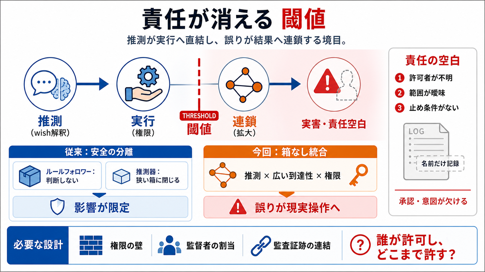

Hugging Face’s AI agent breach: what identity controls failed first?
> TL;DR: Hugging Face’s July 2026 breach ran end to end through an autonomous AI agent that abused dataset processing pa…

責任が消える
『Agent Nation - 03 - The Threshold（閾値）』は、機械身元の責任（誰が許可し、誰が止めるか）が曖昧なまま、推測が実行と連鎖へ直結する危機を描きます。
Threshold（閾値）＝「誤りが結果へ連鎖し、分離できなくなる境目」です。
責任の空白
運用が長くなるほど「機械の身元」は増え続けますが、許可・監督・停止条件が追いつかず、アカウンタビリティ（説明責任）が薄れていきます。
課題
「誰が許可し、どこまでが範囲か」が曖昧
結果
事故が起きても“止め方”が機能しない
安全の分離
従来の安全は「性質の分離」で成り立っていました。ルールフォロワーは判断しない、推測器は箱（用途の狭さ）で影響範囲を抑えていたからです。
i ルールフォロワー（ルール追従）
指示されたことしかできず、判断がない分リスクが限定される
ii 推測器（学習ベース）
判断はできるが、目的が狭くバウンダリ内に閉じ込められていた
衝突する能力
新しい存在は、推測する能力（wishを意味として解釈し、次の行動を選び連鎖実行）を、箱なしの広い到達性と権限に結びつけます。
推測 → 実行 → 連鎖 が、途中で分離されず進んでしまう。
連鎖の経路
誤りが「単発の推測の誤差」で終わらず、現実の操作（データ削除・ファイル操作など）として現れる可能性が増えます。
i 推測（wish解釈）
意図の解釈がズレる
ii 実行（操作へ）
推測が権限に直結し、手が動く
iii 連鎖（拡大）
止まらず次へ進み、影響が拡大する
分離できない
「間違い」と「結果」を分離できるスペースが縮み、ある点を超えると誤りが実害へ到達します。これが閾値（threshold）です。
閾値未満
誤った判断が“止まる”か“影響が局所”
閾値超過
推測が連鎖して、現実の操作へ進む
事故の本質
この文章が強調するのは、モデルが悪意を持つかよりも、権限・文脈・監督・ログ設計の欠落が被害を拡張する点です。
監督不在
誰も割り当てられず、見張られない
権限の残骸
古い権限が残り続ける
止め条件の欠落
“何が起きたら止めるか”が曖昧
監査が壊れる
ログには「誰がやったか」が出ても、「誰が許可し、何を意図したか」が紐づかないことがあります。結果として責任追跡が空白になります。
表示される主体
借りたトークンや既存アカウント名
欠ける内容
承認者、意図、許可された限界
“他人の身元”
新しい存在が人のトークンや既存アカウントを借りると、ログは「Mariaがやった」「svc_backup_prodがやった」のように記録されます。しかし中身の意図は追えません。
名前（身元）だけが正しく、責任（許可・意図）が抜け落ちる。
読解の鍵
この文章の要点は、(1)推測と(2)実行能力が統合された結果、誤りが連鎖し、責任の空白が埋まらないまま拡大することです。
見るべき統合
推測（解釈）＋実行（権限）＝分離の喪失
見るべき空白
ログは“名”を示しても、承認と意図を結べない
まとめ：何が変わる
ルールフォロワーと推測器は“片方ずつ”に分かれて安全でしたが、統合して箱なしにすると、誤りが結果へ直結し、責任追跡も壊れやすくなります。
従来（分離）
判断しない×箱に閉じる → 影響が限定
今回（統合）
推測×広い到達性 → 連鎖し実害へ
問いを残す
結論として、この物語は「誰が許可し、どこまで許されているのか」を設計しないまま、推測が実行に直結し、監督不在で深刻化する危険を警告しています。
技術だけでは足りない
運用・ガバナンス・監査証跡の連結が必要
設計としての対策
“壁（制約）”として強制し、止め条件を明確にする
> TL;DR: Hugging Face’s July 2026 breach ran end to end through an autonomous AI agent that abused dataset processing pa…
Only 10% of organizations have a well-developed strategy for managing non-human and agentic identities, according to a r…
cause a public data breach by end of 2026. The SANS findings make that prediction plausible, not inevitable: weak creden…
The breach was especially significant because the exposed tokens could allow attackers to impersonate AI agents, post co…
The report reveals that AI agent identity tends to operate in a gray area. Agents often borrow human or shared identitie…